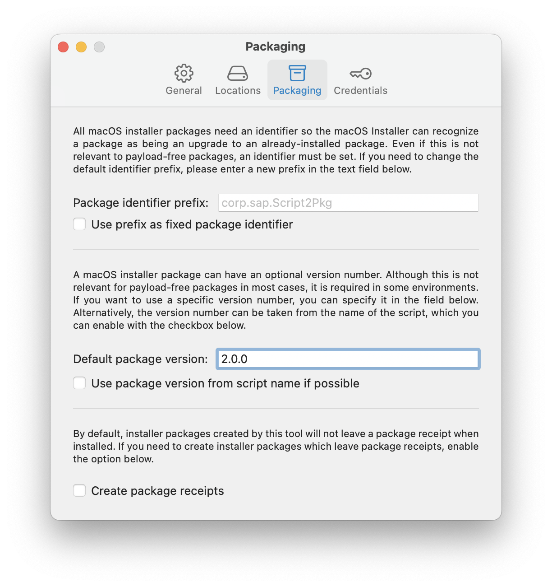

Script2Pkg
Script2Pkg
Script2Pkg
Setting package version
A macOS installation package can have an optional version number. This is most useful if the installer package leaves a receipt, as the package identifier and version information are included in the receipt. For more information on installer package receipts, please see the Glossary .
By default, the package version used by the app will be the following: 1.0.0
If you want to choose an alternate version number, use the following procedure:
1. Go to the Script2Pkg menu and select Settings…

2. Select the Packaging option.

3. Click in the Default package version: entry blank and enter whatever numeric value you want as the new version number. Packages created by the app will now use this as the package version number.

You can also set the app to try and detect version information from the script’s filename. For example, if the script is named as follows, the app can be set to detect the version information and use it when creating the package: example_3.0.0.sh
Go to the Script2Pkg menu and select Settings…
Select the Packaging option.
Enable the Use package version from script name if possible option. Packages created by the app will now try to identify version information from the script’s name and use that information as the package version number.

Reverting to Default Settings
To reset back to the default settings, remove the current entry in the Default package version: entry blank. If applicable, also uncheck the Use package version from script name if possible option.